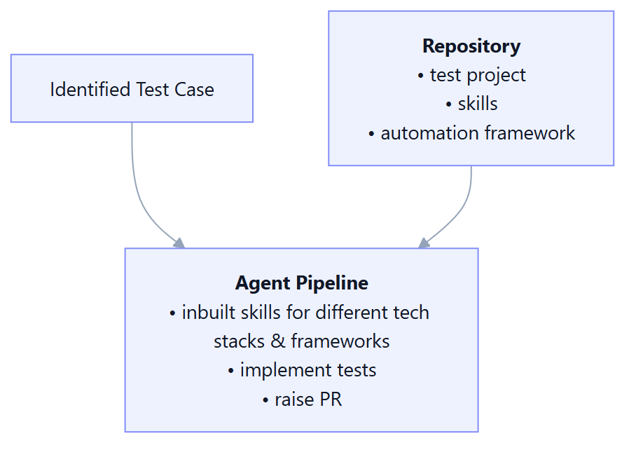
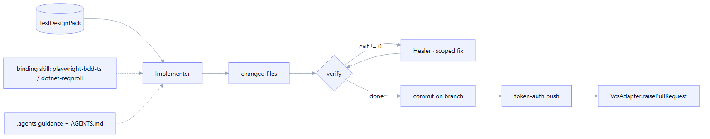
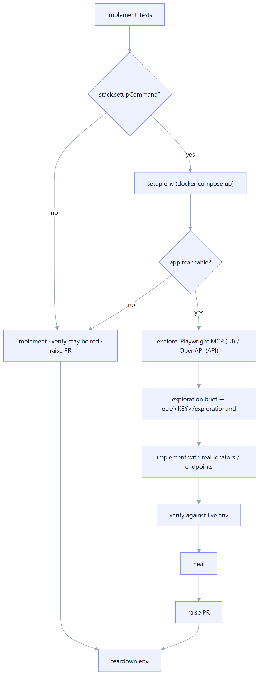
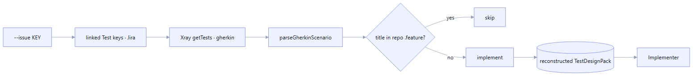

Implementation & VCS
A code agent turns the test design into real step definitions and page objects, verifies them, heals failures, and raises a pull request — on Azure DevOps or GitHub, authenticated for unattended runs.
Overview
The implement-tests verb runs the Implementer → Verifier → (Healer) → commit → PR
chain and emits an ImplementationPack (changed files, per-scenario status, verify results, heal
attempts, PR reference, prompt path). The code agent runs in-process via an SDK — no external
CLI binary — so it just needs an API key.


The code agent (in-process SDKs)
The Implementer selects a binding skill for the stack (playwright-bdd-ts,
dotnet-reqnroll), builds a prompt from the design pack + the repo's .agents/ guidance
and AGENTS.md, and invokes the agent runner. Provider is chosen from config:
Anthropic Claude (Claude Agent SDK) or OpenAI Codex (Codex SDK). Both run the
agent loop in-process and edit files directly in the repo working tree.
Tech stack
ANTHROPIC_API_KEY in the environment; Codex via the OpenAI key in config.MCP tools for the agent
Through the Model Context Protocol, the agent can use live tools — most importantly a
Playwright MCP server to drive a real browser and read DOM. mcpServers in the
.agents config (stdio/http/sse) are expanded (with ${ENV} placeholders) and passed to
the SDK, which launches stdio servers as subprocesses.
Environment-aware run, explore-before-implement (M20)
When a stack configures a setupCommand (e.g. docker compose up -d), Manso
grounds the tests in the real running app instead of guessing. It brings the environment up
once, explores it to build a brief, implements with that brief, verifies
against the live env, and tears it down. Crucially, this is opt-in and non-blocking: if the
repo has no Docker infra, Docker isn't available, or the app never comes up, Manso falls back to
today's flow and still raises the PR.
Tech stack
How it works
- Detect. Env-aware only when
stack.setupCommandis set (and--no-envisn't passed). - Setup once. Run
setupCommand, then pollhealthCheck/appUrluntil the app responds (non-5xx) or a timeout. - Explore. UI → drive the live app via Playwright MCP and report real role/label/test-id locators and flows; API → fetch the OpenAPI spec and summarize endpoints + schemas. The brief is saved to
out/<KEY>/exploration.md. - Implement with the brief injected into the prompt (real locators/endpoints, no guessing).
- Verify against the running env; heal on failure.
- Teardown. Always run
teardownCommandafterwards (even if setup/verify failed) — no leaked containers.

stack.kind (ui/api), else inferred from an OpenAPI URL or @ui/@api scenario tags.Verify & heal loop
After the agent edits files, the Verifier runs the stack's verifyCommand. On a
non-zero exit, the Healer builds a narrow "repair only the failing tests" prompt and re-runs
verification, up to --max-heal-attempts (default 1). Verify failures don't block the PR — the PR
is still raised for human review, with the status recorded as partial.
partial with a
warning so the commit/PR still proceed — a finished implementation is never silently discarded. A crash with a red
verify, or with no changes, still reports failed.Branch & commit
commitChangesOnBranch creates a branch named after the issue key (e.g. FINT-1056),
stages and commits the agent's changes, and optionally pushes. It is idempotent (re-uses an existing branch)
and never throws on a non-zero git exit — failures surface as warnings the CLI reports.
Implementing from a design file
The classic path: implement-tests --repo <path> --design out/<KEY>/test-design.json.
It loads and validates the on-disk TestDesignPack, then runs the chain. Best when design and
implementation happen in the same session.
Implementing from Xray (stateless --issue)
For pipelines where each step is its own job, implement-tests --issue <KEY> --repo <path>
reconstructs the design from Xray instead of a file: it fetches the story's linked Cucumber
tests, pulls each one's Gherkin, parses it back into structured scenarios, diffs against the repo's existing
.feature titles, and implements only the missing ones. Nothing missing → it exits
cleanly. This makes the implement step fully stateless. --require-linked-tests (set by the pipeline
implement step) turns "the story has zero linked tests" into a hard failure instead of a quiet green
no-op, since design is expected to have run first.
Tech stack

VcsAdapter — Azure DevOps + GitHub
Pull-request creation and comment I/O live behind a single VcsAdapter seam with two
implementations: AzureDevOpsAdapter and GitHubAdapter (github.com + Enterprise).
resolveVcsAdapter detects the platform from the repo's origin remote and builds the
matching adapter with the right token.
Tech stack
| Capability | Azure DevOps | GitHub |
|---|---|---|
| Raise PR | ✓ | ✓ (handles "already exists") |
| Read comment threads | ✓ | ✓ (issue + review comments) |
| Post / reply | ✓ | ✓ |
| Remote detection | https / ssh | github.com + Enterprise |
Token-based push (unattended-ready)
On a clean CI agent there are no cached git credentials. resolveGitPushAuth inspects the remote
and builds an http.extraHeader so the git push authenticates with the same token
that drives the REST API — GitHub via x-access-token, Azure via the PAT. The secret never lands in
the remote URL, and the executed command is logged redacted. With no token, it falls back to
the host's local git credentials.